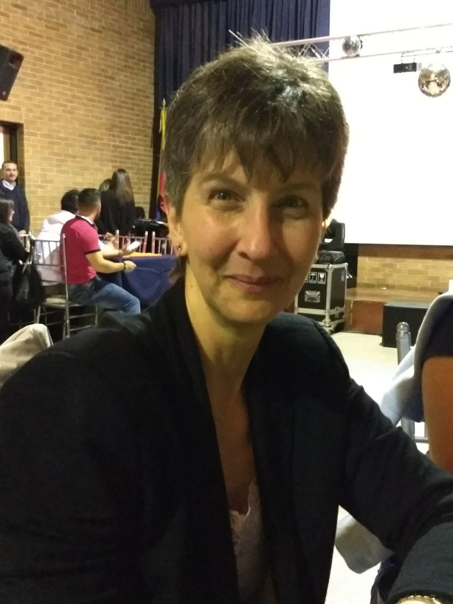

¿Para qué estoy en Barnasha? Para aprender, compartir experiencias y conocimiento, acompañar a las personas a ser libres, plenas y saludables en el viaje de su ser integral durante la vida. ¿Qué espero lograr? Que verdaderamente crucemos el umbral de la consciencia plena y ésta filosofìa llegue a cada rincón de nuestro paìs sin distinción alguna. Cruzar y derribar las fronteras físicas y del pensamiento entre los hombres de todas las naciones, mediante la recuperación del poder personal, la armonía y comprensión de su autosanación emocional, física, mental y espiritual. Experiencia: Coach de vida y empresarial: 3 años de experiencia creando, planeando, liderando actividades de sensibilización, concientización de personas, pacientes y clientes mediante la construcción y evaluación de objetivos que les capacite a definir su proyecto vida y convertirse en aportes para la sociedad en satisfacciòn y plenitud. Terapeuta alternativa: 5 años de experiencia, recibiendo y agendando solicitudes de pacientes con diferentes patologías crónicas o agudas, de orden neurológico, físico o respiratorio. Realizando consultas y visitas a domicilio(segùn el estado del paciente), efectuando evaluación y tratamientos integral en cualquier caso, estableciendo pautas terapéuticas y programa complementario a seguir; tomando en cuenta recomendaciones médicas, trabajando diferentes técnicas terapéuticas con el paciente durante 1 hora o más, dejando tarea asignada, de la cual se ve progreso en cita posterior. Responsable de tener en perfecto orden y disponibilidad consultorio e implementos asignados a las diferentes terapias, cumpliendo estrictamente los horarios agendados para las sesiones. Estudios: ”Certificación, Coach Profesional, de vida y empresarial”, Coaching for Wellness. “Certificación PNL: Médica y Psiconeuroinmunoterapia, Metáforas y Mariposas”, John Grinder y Carmen Bostic St. Clair, ASEIA. Terapias Alternativas, Universidad del Rosario Evaluación fisioterapéutica por cadenas cinéticas, Escuela Colombiana de Rehabilitación Fisioterapia Escuela Colombiana de Rehabilitación Una frase: Cuando cambias el modo de mirar las cosas, las cosas que miras cambian. Anònimo.